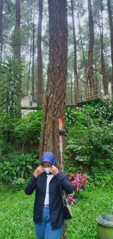
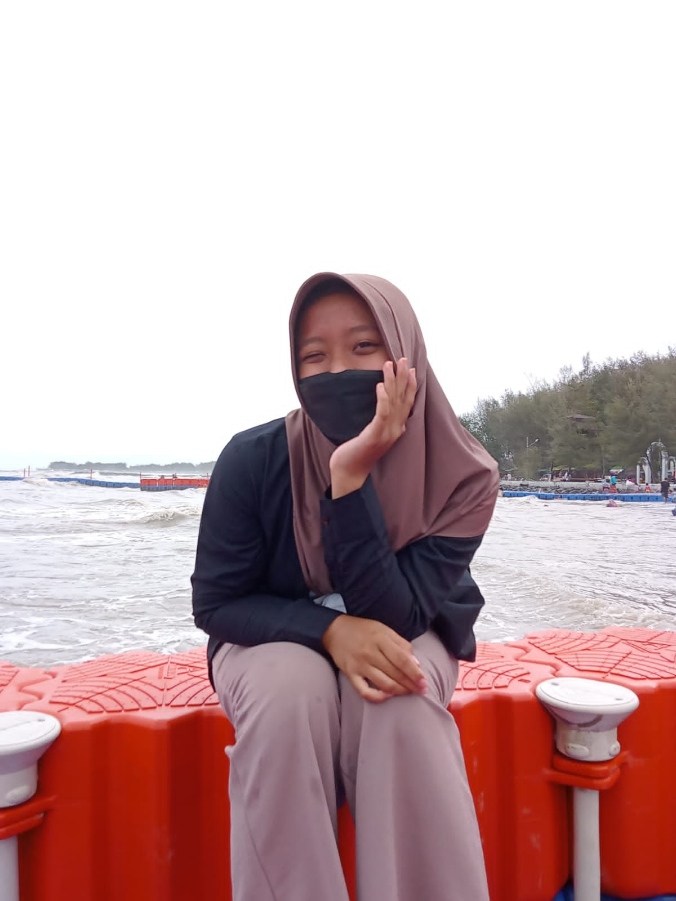

santii and travel
Santiii
Holiday
hai teman teman ini adalah tempat holiday yang sudah saya kunjungi di berbagai macam macam tempat wisata
My visit list

-

Prabalintang
Prabalintang merupakan wisata yang populer untuk berfoto dibawah payung penuh warna yang tergantung di pohon pinus ramping.
-
Cacaban
waduk cacaban adalah salah satu destinasi wisata unggulan di kabupaten tegal.
-

Pantai Alam Indah
Pantai alam indah tegal atau disebut PAI ini cukup menarik kalau kamu sedang liburan ke tegal loh.